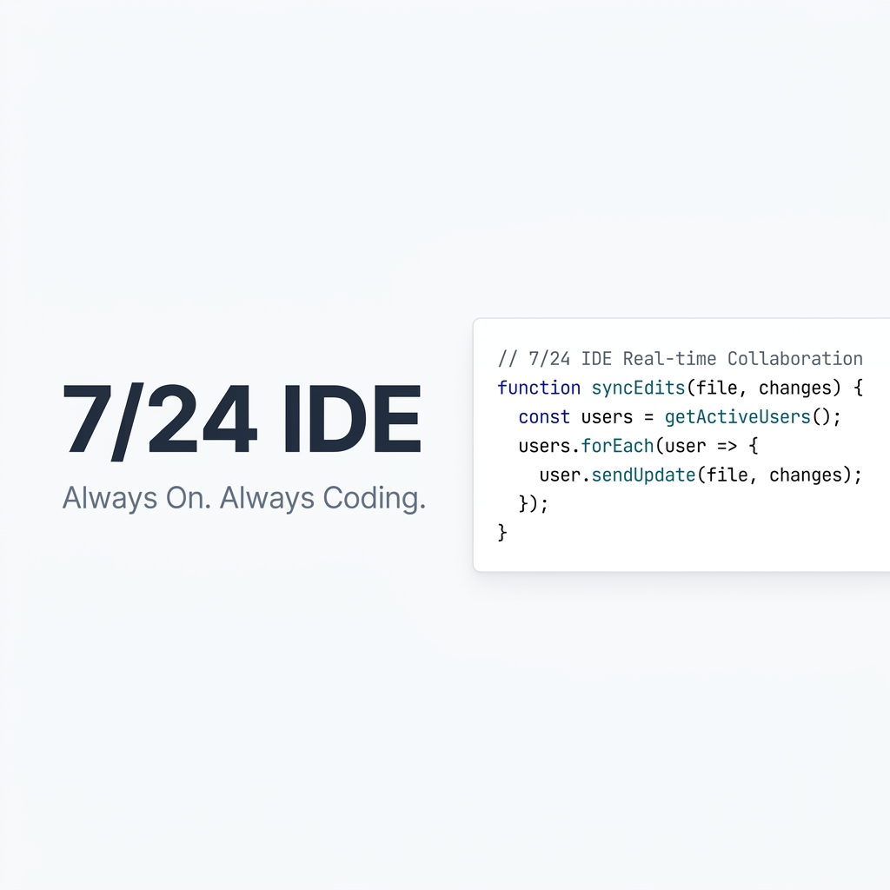

7/24 IDE is a complete, local workspace for Windows. Describe your idea in the chat, and the agent will read files, write code, install dependencies, and run commands—showing the result in an interactive live preview.

Unlike closed cloud sandboxes, 7/24 IDE works directly in your chosen folder on your local machine.
The agent can run compilers, install libraries via npm install, configure databases, and execute custom build scripts directly in your project folder.
You have complete control over the AI. Configure custom permission thresholds for file reads, code writes, and command executions.
Before every action, the agent takes a silent snapshot of your workspace. You can instantly roll back the entire project files to any previous step.
Star up to 3 preferred OpenRouter models to toggle them instantly using clickable quick-select buttons right above the chat input.
Open a live interactive preview of your HTML application in an external, independent window that automatically updates as you compile changes.
Your files, projects, chats, and configurations are stored locally on your PC. Your OpenRouter API key is securely encrypted using Windows DPAPI.
Observe this step-by-step interactive simulation of the developer agent taking a user prompt and building it into a working product.
index.html for structure, styles.css for clean styling, and script.js to fetch weather data. Starting compilation...
index.htmlstyles.cssscript.js...We believe autonomy must be safe. In 7/24 IDE, you configure the exact trust and permissions settings for the developer agent:
The agent is requesting permission to run a terminal command:
npm install chart.js --save
Starting your journey with an AI developer is incredibly straightforward.
Download the setup file (.exe) for Windows from GitHub and run the standard installer.
Choose any directory on your local machine where you want the agent to build and modify files.
Paste your OpenRouter API key in settings, pick your preferred AI model, and start building!